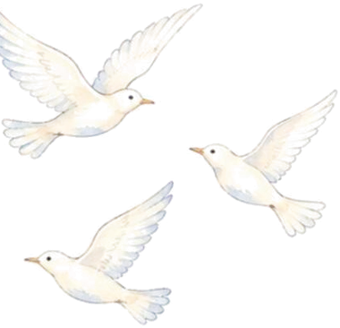
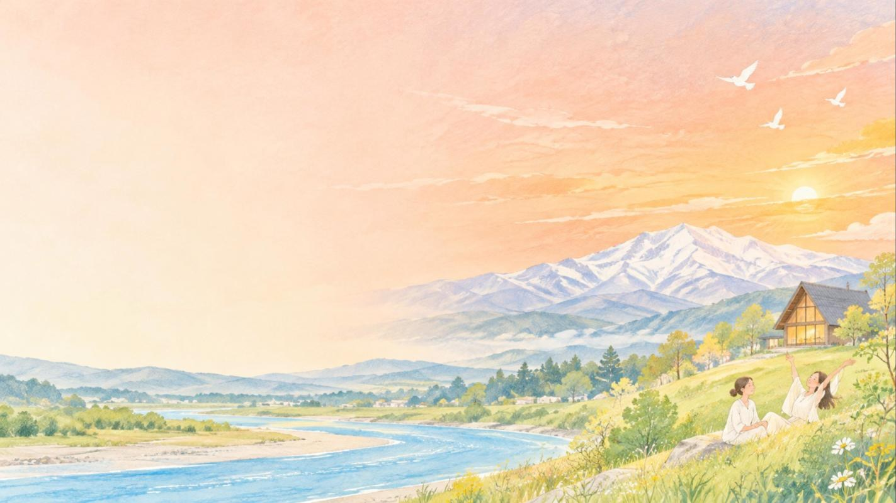
おなかから、 こころも体も えがおに。 腸と脳から整える、白山市の美腸活サロン
新メニューrelax HOT腸セラピー 40分6,850円。はじめての方も気軽に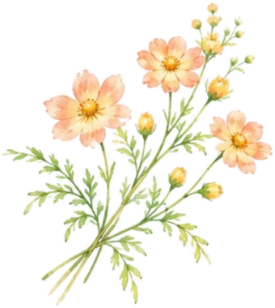
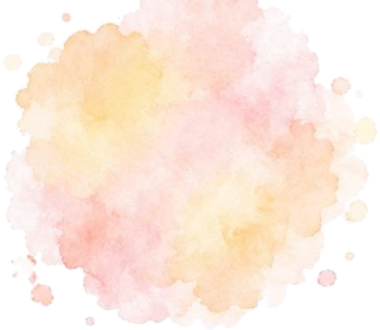
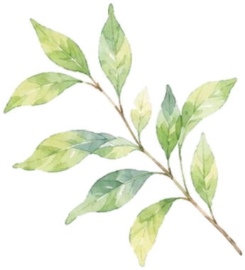
メッセージ
来てくださる方が、
みんな笑顔で
帰れる場所に。
レアイルという名前は、ハワイの言葉で「喜び」をあらわす「レアレア」と、「スマイル（笑顔）」を合わせてつくりました。
サロンに来てくださる人たちが、みんな幸せになって、笑顔で帰ってほしい。そんな思いをこめています。
ダイエットや痛みのケアで終わりにせず、続けて整えていくことで、病気になりにくい体づくりをいっしょに考えていく美腸活サロンです。
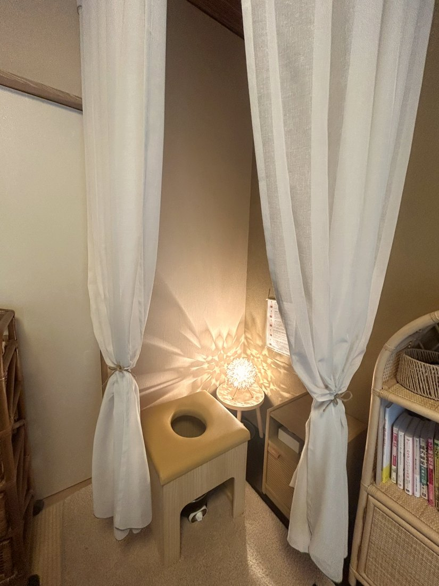
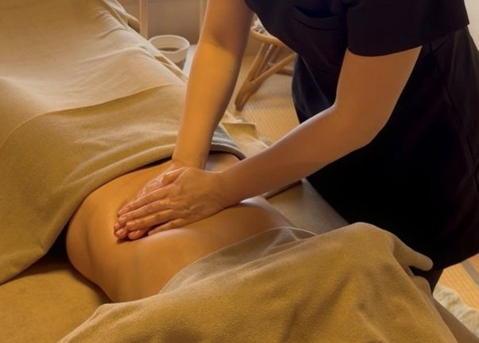
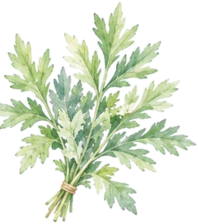
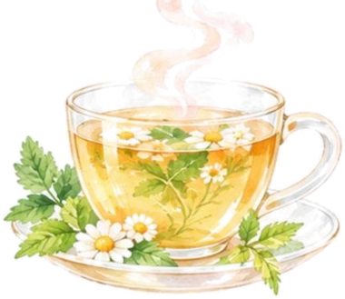
サロンの風景
畳の個室で、ゆっくりと
石川県白山市にある、和室を生かしたプライベートサロンです。カーテンで仕切られた空間で、まわりを気にせず過ごしていただけます。
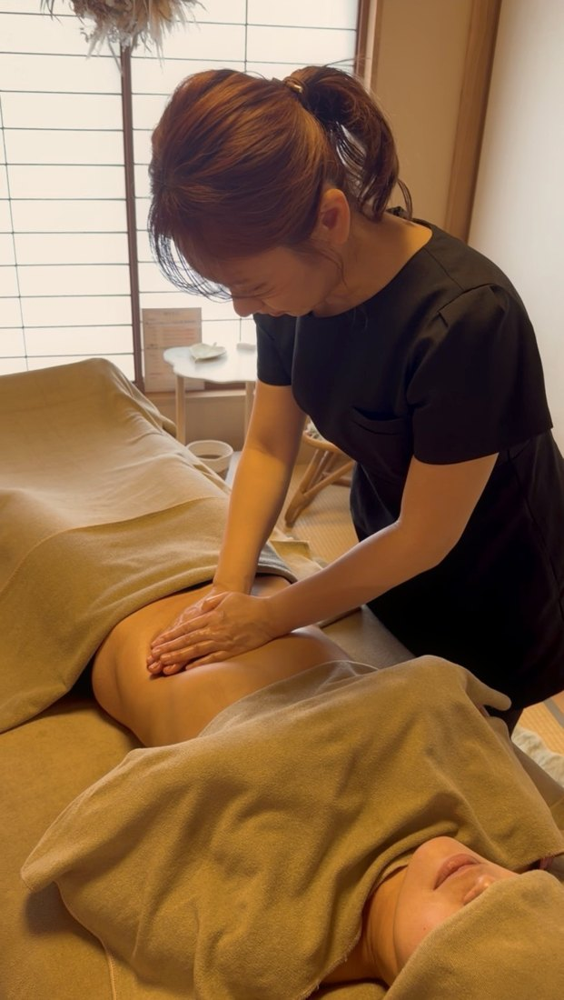
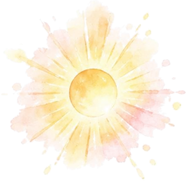
サロンの考え方
病気になりにくい体づくり
医療が進歩する一方で、日本の医療費は年々大きくふくらんでいます。暮らしの格差が広がり、必要な医療を十分に受けにくい人も増えています。だからこそ、病気になる前の「未病」のうちから体を整えておくことが、これからの時代にますます大切になると考えています。
その場かぎりで
終わらせないダイエットや痛みのケアをゴールにせず、その先の毎日の体調まで見すえて施術します。
続けて整える
一度で終わりではなく、定期的なメンテナンスで、体の調子を保つ習慣をつくっていきます。
未病という考え方
まだ病気ではないけれど、なんとなく不調。その段階で自分の体に目を向けることを大切にしています。
おなかに、そっと手をあてる時間
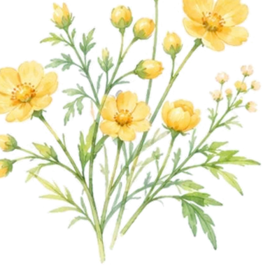
腸のはなし
なぜ、腸活が大切なの？
腸は、食べたものを消化するだけの場所ではありません。体を守るしくみや、毎日の元気、そして気持ちにまで深くかかわっています。まずは、おなかの中をのぞいてみましょう。
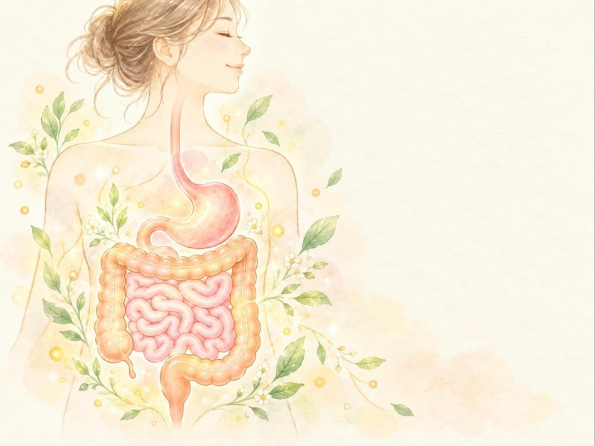
- 胃食べたものをためて、少しずつ腸へ送り出す
- 大腸約1.5m水分を吸収し、いらないものを外へ出す
- 小腸約6〜7m栄養の大部分を吸収する、体の入口
腸が担っている、3つの大切な役目
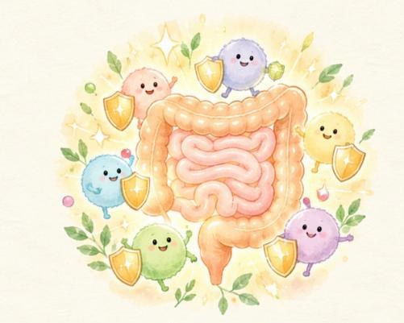
体を守る
免疫細胞の約7割
体を守る免疫細胞のおよそ7割が、腸に集まっているといわれています。
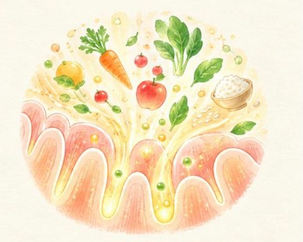
栄養をとりこむ
小腸の長さ約6〜7m
食べたものの栄養は、おもに小腸のヒダから吸収されます。腸が弱っていると、栄養をうまく取りこめず、疲れやすさにもつながるといわれています。
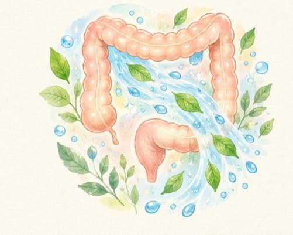
いらないものを出す
毎日のめぐり
体にいらないものを外へ出すのも、腸の大切な役目。食事や睡眠、気持ちの波によって、腸の動きは毎日ゆれ動きます。
YOLO式腸もみ
レアイルは「YOLO式腸もみ」の認定店です。おなかをあたためながら、腸の状態を確かめ、手でやさしくもみほぐしていきます。〔要確認：YOLO式の公式な紹介文〕
腸とこころ
自律神経とおなかの関係
自律神経のリズムが乱れると、おなかの調子にもあらわれやすくなります。反対に、腸を整えることが気持ちの前向きさにつながる、という考え方もあります。腸と脳は、おたがいに影響し合っています。レアイルが腸もみと脳もみの両方をおこなうのは、そのためです。
便秘やおなかの張りは、腸のことだと気づきやすいもの。けれど、「やる気が出ない」「気分が沈みがち」といった感覚とおなかの関係は、あまり知られていません。
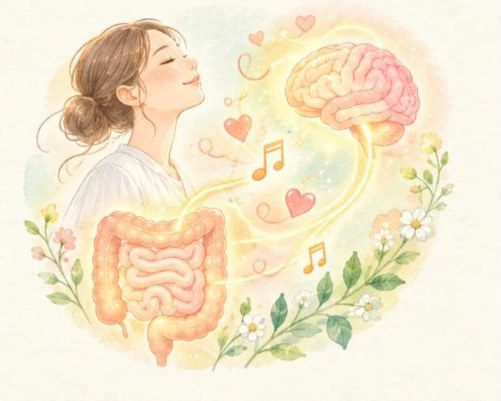
こんな方に
ご相談の多いお悩み
男性のお客さまもご来店いただいています。
続けるメンテナンス
整えた状態を、保つために
腸の状態は、食事や睡眠、気持ちの波によって毎日ゆれ動きます。一度ほぐして終わりにせず、定期的に通っていただくことで、自分の体の変化に気づきやすくなります。続けて通われる方のために、回数券もご用意しています。
今の状態を知る
カウンセリングと施術で、いまのおなかの状態をいっしょに確かめます。
リズムをつくる
間隔をあけすぎずに通い、体を整える習慣をつくります。
良い状態を保つ
自分に合ったペースで、病気になりにくい体づくりを続けます。
おすすめの通う間隔：〔要確認：例「はじめの1か月は週1回、その後は月2回」など〕
マンガでわかる
はじめての腸もみ
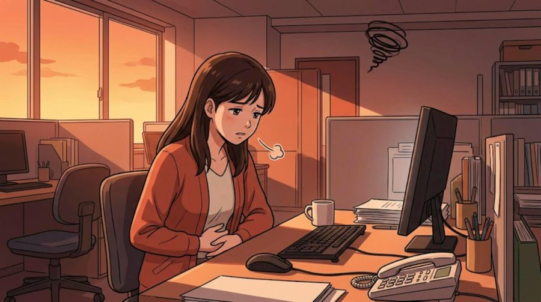
なんだか毎日、おなかが重い…
はぁ…
やる気も出ないなぁ
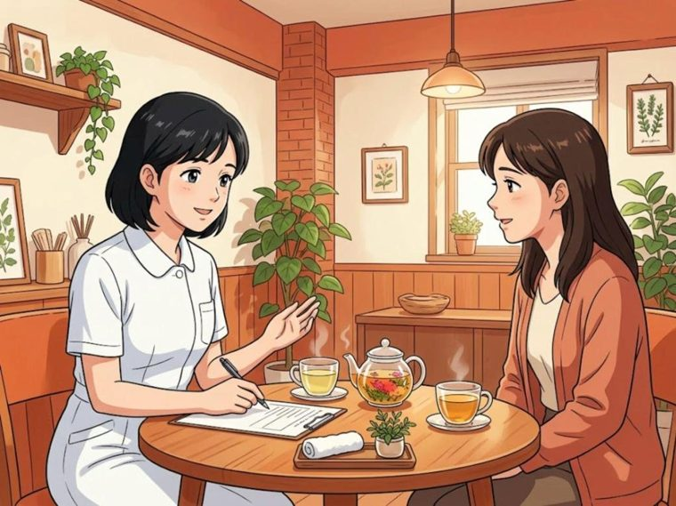
おなかの調子と
気持ちって
つながって
いるんですよ
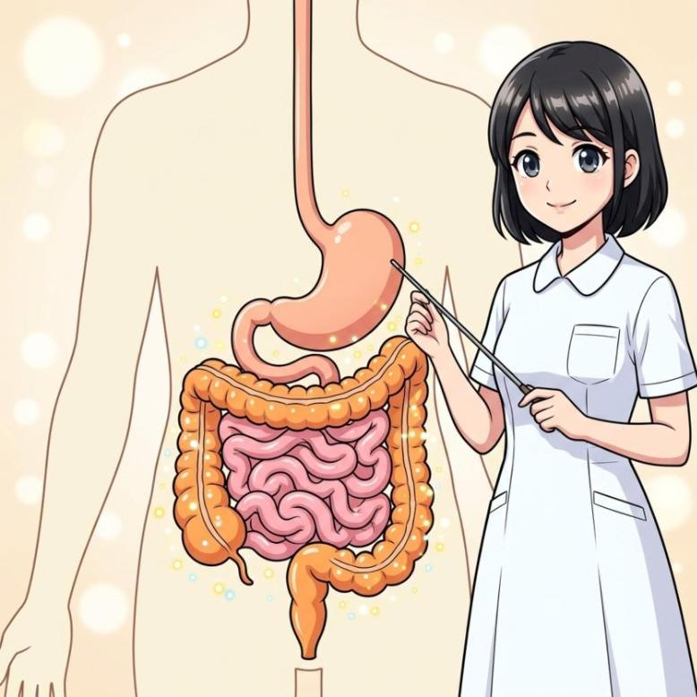
免疫細胞の
約7割は腸に
いるといわれて
いるんです
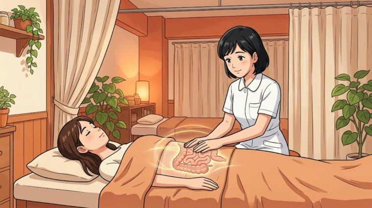
おなかをあたためながら、やさしく腸もみ
あったかい…
ほっとする〜
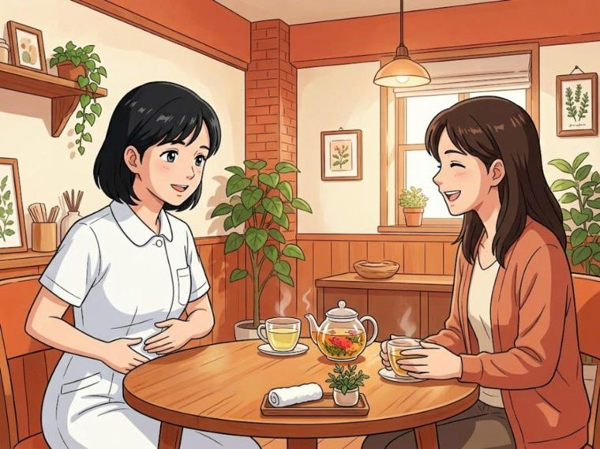
おうちでは、こうして
おなかをさすって
みてくださいね
やってみます！
5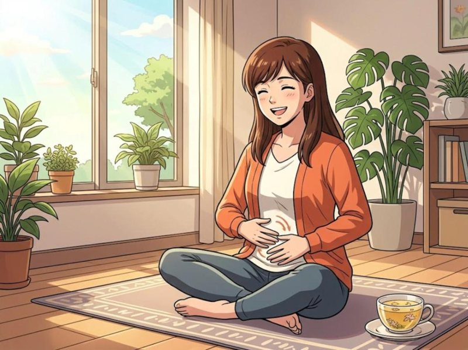
おなかと向き合う時間が、毎日の習慣に。
今日も
いい朝！
1カウンセリング2腸のおはなし3HOT腸もみ4セルフケアのアドバイス
プロフィール
岩内 ゆか美腸活サロン Leaile 代表／フリーランス看護師
- 看護師
- YOLO式腸もみ 認定
- 脳もみ nomomi® セラピスト
看護師として医療の現場を見てきたからこそ、伝えられることがあります。病気になってから治すだけでなく、その前の段階で体を整えていく大切さを、ひとりひとりにわかりやすくお伝えしています。
- 解剖生理の知識をもとに、おなかの状態をていねいに説明します
- 医療現場の現状を知る立場から、予防の大切さをお話しします
- 発酵食のオンラインレッスンで、毎日の食事からの腸活もお伝えしています
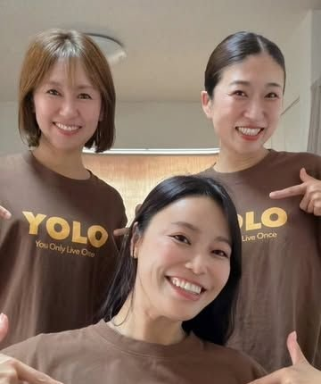
学び続けること
YOLO式腸もみを、学び続ける理由
腸もみの技術は、一度覚えて終わりではありません。同じ志をもつ仲間と学び合いながら、施術の質を高め続けています。いずれは認定講師として、腸もみを学びたい方にも伝えていく予定です。
よくある質問
よくある質問
男性でも利用できますか？
はい。男性のお客さまにもご来店いただいています。
痛くないですか？
おなかの状態を確かめながら、強さを調整しておこないます。気になることがあれば施術中でもお声がけください。〔要確認〕
どんな服装で行けばいいですか？
〔要確認：着替えの用意の有無〕
どのくらいの間隔で通えばいいですか？
おなかの状態や生活のリズムに合わせてご提案します。続けて通われる方には回数券もご用意しています。
病院の治療のかわりになりますか？
レアイルは医療機関ではなく、施術は医療行為ではありません。通院・治療中の方や妊娠中の方は、主治医にご相談のうえご来店ください。
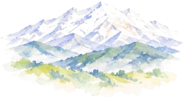
ご予約・アクセス
サロンの場所
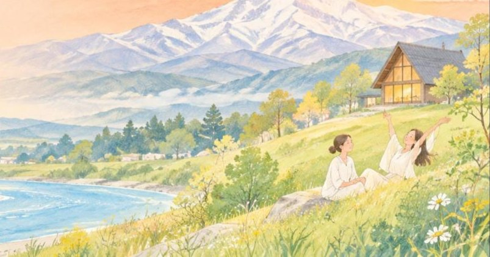
- サロン名
- 美腸活サロン Leaile（レアイル）
- 住所
- 石川県白山市 〔要確認：番地〕
- 営業時間
- 9:00〜（最終受付 16:00）
- 定休日
- 〔要確認〕
- 駐車場
- 〔要確認〕
- ご予約
- LINEから受け付けています